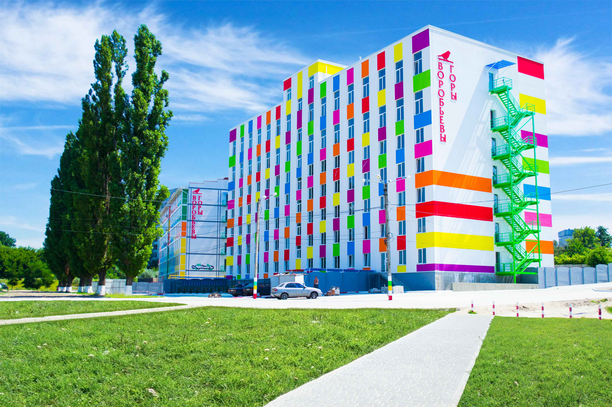
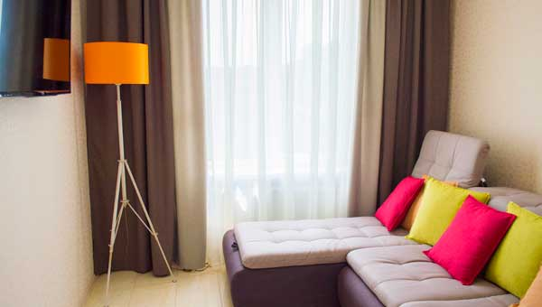
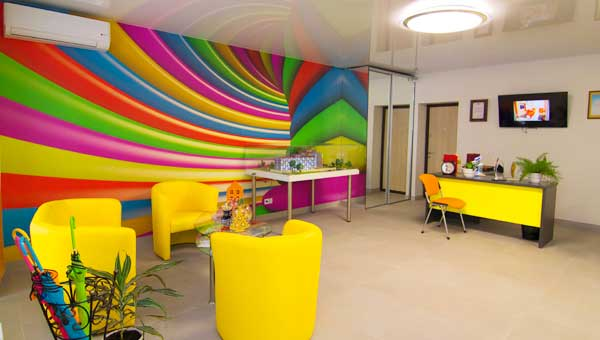
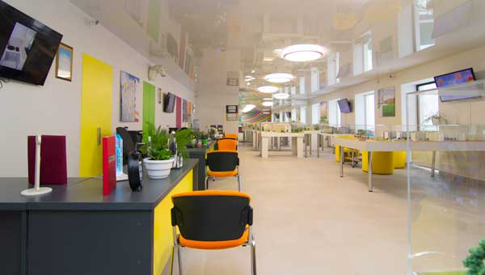
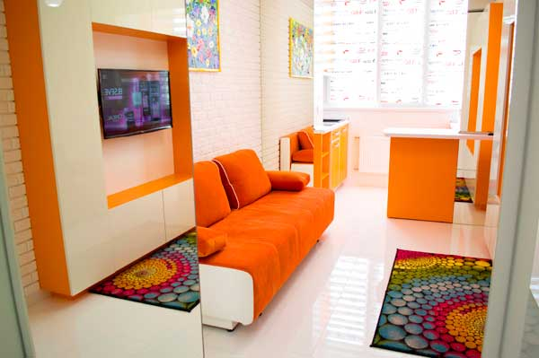
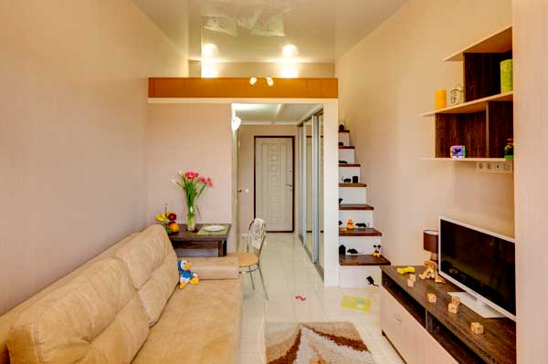
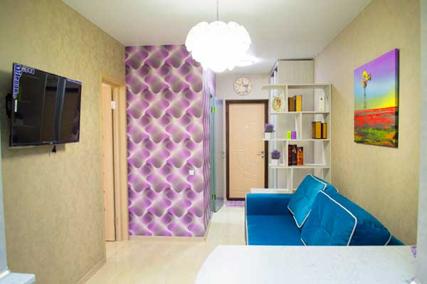

популярные вопросы
Посмотреть ответ
Юлия Сбитнева
Харьков
Добрый день! Подскажите, где находится ваш дом?

ЖК "Воробьевы Горы
4 мая 2017
Здравствуйте! ЖК «Воробьевые горы» расположен на Салтовке, 4 минуты от м. Академика Павлова, пер. Шевченковский, 32. Более подробную информацию о том, как к нам добраться, Вы можете посмотреть на нашем сайте, перейдя по ссылке: http://www.vorobievy-gory.kharkov.ua/#contact-us/
Посмотреть ответ
Марина Анева
Днепр
Подскажите, пожалуйста, когда сдача 6-го дома?
ЖК "Воробьевы Горы
4 мая 2017
6-й дом ЖК «Воробьевы горы» полностью построен! Сейчас ведутся внутренние отделочные работы. Сдача и заселение уже летом этого года!
Посмотреть ответ
Григорий Бинев
Харьков
Здравствуйте! Расскажите, что такое квартира «под ремонт» и что туда входит.

ЖК "Воробьевы Горы
7 мая 2017
Здравствуйте! Квартиры в ЖК «Воробьевы горы» продаются с современным дизайнерским евроремонтом и в состоянии «под ремонт». В квартире «под ремонт» подведены коммуникации санузла и кухни, установлены счетчики воды и электричества, выполнена подводка телевидения, интернета и аудио-видео домофона, установлены качественные двери и металлопластиковые окна.
Посмотреть ответ
Мария Еква
Харьков
Как можно посмотреть Ваши квартиры?

ЖК "Воробьевы Горы
8 мая 2017
Посмотреть квартиры Вы можете в любое удобное для Вас время с понедельника по пятницу с 9-00 до 20-00, суббота 9-00 до 17-00 и воскресенье с 10-00 до 17-00 в нашем отделе продаж, расположенном по адресу переулок Шевченковский, 32. Звоните по телефону 096-016-17-17 и записывайтесь на просмотр! Мы с радостью покажем Вам все планировки и варианты дизайнов в ЖК «Воробьевы горы», и подберем для Вас наиболее подходящую!
Посмотреть ответ
Карина Стулов
Одесса
Расскажите подробнее про рассрочку. Какие условия и ежемесячные платежи по ней?
ЖК "Воробьевы Горы
8 мая 2017
ЖК «Воробьевы горы» предлагает несколько видов рассрочки. Первый это покупка в кредит. Кредит Вы можете оформить в любом удобном для Вас банке. Нашими партнерами по кредитованию являются UniCredit Bank, Кредобанк. Также есть возможность рассрочки от застройщика, её условия обсуждаются в индивидуальном порядке на просмотре в нашем отделе продаж.
Посмотреть ответ
Денис Бараков
Херсон
Здравствуйте! Вы работаете через агентство или напрямую?

ЖК "Воробьевы Горы
8 мая 2017
Здравствуйте! Мы – Центр продаж ЖК «Воробьевы горы». Агентские проценты Вы не платите.
Посмотреть ответ
Лаша Твитер
Львов
Из чего построены ваши дома? Они как-то утеплены?

ЖК "Воробьевы Горы
11 мая 2017
ЖК «Воробьевы горы» - это стопроцентный кирпичный новострой, построенный по современным энергосберегающим технологиям! Фасады утеплены двумя слоями минеральной ваты, благодаря чему в доме всегда комфортная температура!
Посмотреть ответ
Олег Олегов
Донецк
В ваших домах есть балконы?
ЖК "Воробьевы Горы
11 мая 2017
Все квартиры в ЖК «Воробьевы горы» свободной планировки. По Вашему желанию возможно оборудовать удобную теплую лоджию, либо сделать просторную спальную зону.
Посмотреть ответ
Юлия Смог
Луцк
Здравствуйте! Фото квартир с ремонтом, представленных на сайте, реальные? Можно заказать для себя такой же ремонт?

ЖК "Воробьевы Горы
11 мая 2017
Здравствуйте! Вся информация на сайте полностью соответствует действительности. В квартиру с готовым Евроремонтом входят: польские обои на стенах, французский натяжной потолок, чешская плитка на полу, качественная сантехника в санузле, бойлер, новое металлопластиковое окно, бронированные двери. Счетчики на воду и электричество, выполнена подводка телевидения, интернета и аудио-видео домофона. Также есть несколько комплектаций кухни и меблировки, которые приобрести за отдельную оплату.
Посмотреть ответ
Карэн Азабаев
Винница
Что из себя представляет двухуровневая квартира?

ЖК "Воробьевы Горы
12 мая 2017
Двухуровневая квартиры в ЖК «Воробьевы горы» - это квартира площадью 19 м2, где за счет надежной металлической конструкции можно оборудовать второй уровень под спальное место. Высота потолков в такой квартире 4 м, а 2-го уровня – 1,9 м.
Посмотреть ответ
Владимир Малиш
Луганск
Добрый день! У Вас есть двухкомнатные квартиры?

ЖК "Воробьевы Горы
18 мая 2017
Добрый день! Да, в ЖК «Воробьевы горы» есть двухкомнатные квартиры площадью до 38 м2.
Посмотреть ответ
Юлия Сбитнева
Харьков
Здравствуйте! В Вашей рекламе звучит, что квартиры в ЖК «Воробьевы горы» зарабатывают. Что имеется в виду?
ЖК "Воробьевы Горы
18 мая 2017
Здравствуйте! В жилом квартале «Воробьевы горы» есть возможность приобрести квартиру и сдавать её под аренду. Мы помогаем Вам найти арендатора, с которым заключается договор минимум на год. Ежемесячный доход квартиры от сдачи в аренду составляет 4000 грн. и выше. Таким образом, не прилагая усилий, Вы получаете гарантированный доход от 12% годовых.
Посмотреть ответ
Арсен Бувол
Киев
В какой валюте происходит расчет за квартиру?
ЖК "Воробьевы Горы
20 мая 2017
Оплата в ЖК «Воробьевы горы » осуществляется в гривнах по курсу доллара на день совершения покупки. Цена указывается в долларах США только для удобства понимания.
Посмотреть ответ
Алена Шнурова
Харьков
Добрый день. Как отапливаются ваши дома?
ЖК "Воробьевы Горы
21 мая 2017
В ЖК «Воробьевы горы» установлена автономная система отопления с собственной крышной котельной, укомплектованной итальянским оборудованием фирмы Baxi. Благодаря этому в квартирах тепло и уютно даже в самые лютые морозы, а плата за отопление минимальная в городе!